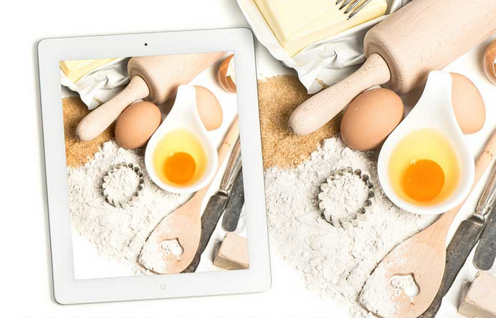

早餐
俗话说：“早餐要吃好，午餐要吃饱，晚餐要吃少。早餐是一天中最不轻易转变成脂肪的一餐，因此一定要摄进主食。早餐前应先喝水，人经过一夜睡眠，从尿、皮肤、呼吸中消耗了大量的水分和营养，早餐起床后处于一种生理性缺水状态。如果只进食常规早餐，远远不能补充生理性缺水。因此，早上起来不要急于吃早餐，而应立即饮500—800毫升温开水，既可补充一夜流失后的水分，还可以清理肠道.但不要在吃早餐前喝较多的水。午餐
健康的午餐应以五谷为主，配合大量蔬菜、瓜类及水果，适量肉类、蛋类及鱼类食物，并减少油、盐及糖分。营养午餐还得讲究123的比例，即食物分量的分配：六分之一是肉或鱼或蛋类，六分之二是蔬菜，六分之三是饭或面或粉（即三者比例是1：2：3）。午餐中的三低一高也是需要特别注意的，即低油、低盐、低糖及高纤维。午餐一定要吃，有的人因为工作繁忙，午餐就咬块面包完事，这样是非常不可取的，对身体健康也是一大伤害，午餐与早餐同样重要。
俗话说“中午饱，一天饱”。说明午餐是一日中主要的一餐。由于上午体内热能消耗较大，午后还要继续工作和学习，因此，不同年龄、不同体力的人午餐热量应占他们每天所需总热量的40%。主食根据三餐食量配比，应在150～200 克左右，可在米饭、面制品（馒头、面条、大饼、玉米面发糕等）中间任意选择。副食在240～360克左右，以满足人体对无机盐和维生素的需要。副食种类的选择很广泛，如：肉、蛋、奶、禽类、豆制品类、海产品、蔬菜类等，按照科学配餐的原则挑选几种，相互搭配食用。一般宜选择50～100 克的肉禽蛋类，50克豆制品，再配上200～250克蔬菜，也就是要吃些耐饥饿又能产生高热量的炒菜，使体内血糖继续维持在高水平，从而保证下午的工作和学习。但是，中午要吃饱，不等于要暴食，一般吃到八九分饱就可以。若是白领族少劳力的工作群在选择午餐时，可选简单一些清烫茎类蔬菜、少许白豆腐、部分海产植物做为午餐的搭配。
晚餐
晚餐有多种意思，有人每天晚上吃的正餐笼统的讲叫做晚餐，健康晚餐很重要对我们的身体健康有一定的影响，健康晚餐有六项注意事项，晚餐早吃少易患结石，所以晚餐很重要。另有国外电影《Le Souper》在中文译为《晚餐》。还有希腊当代戏剧家卡巴奈利斯笔下的《晚餐》戏剧。
健康晚餐六项注意:
1、每周七天晚餐餐饮食谱必须保证多种花色品种，每顿晚餐需要2个素菜、1个荤菜、1个汤和1碗米饭;
2、每天摄入少量酒，一般在50毫升以下;
3、每天摄入的油一般不要超过25克，即在半两以内；
4、健康餐饮提倡喝茶，但茶不宜过浓，因为浓茶中含有大量咖啡因；
5、不提倡吃得太辣，但青椒可以吃，因为其中有丰富的维生素C和很好的营养成分；
6、餐饮中使用调味品要少，提倡多吃自然食物，不追求口感，同时，餐饮中盐份也不宜太多;
7、吃完后要散步.
膳食搭配科学

膳食必须符合个体生长发育和生理状况等特点，含有人体所需要的各种营养成分，含量适当，全面满足身体需要，维持正常生理功能，促进生长发育和健康，这种膳食称为“均衡膳食”。美国农业部指南建议每天所需谷类、面包、蔬菜、水果的量大大增加，而奶制品及肉类的需求量则大为减少，其内容如下：谷物类和精制的、添加营养的谷类制品、面包、热或冷的麦片、面食、米饭：一天6—11份,1份相当于1片面包或半杯大米。
蔬菜类深色绿叶蔬菜、黄色或橘色蔬菜：一天3～5份。水果类柑橘类水果、番茄或其他含丰富维生素C的水果：一天2-4份。一份相当于1个中等大小的水果或6盎司新鲜果汁。乳制品类牛奶、奶酪、酸奶及其他奶制品：一天2-3份。一份相当于一杯酸奶或牛奶或1盎司乳酪。肉类牛肉、仔牛肉、猪肉、羊肉、鱼肉、鸡肉、动物肝脏、蛋类、肉类代用食品：一天2-3份。一份相当于3-4盎司动物蛋白、一般也就大致相当于一副纸牌那么大，或1/4杯坚果。脂肪、油、糖尽量节制使用。